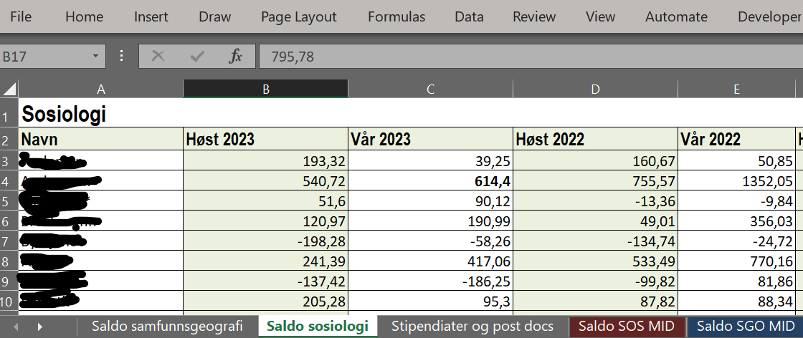
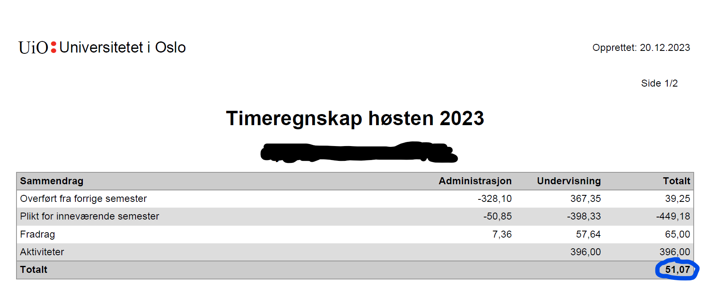
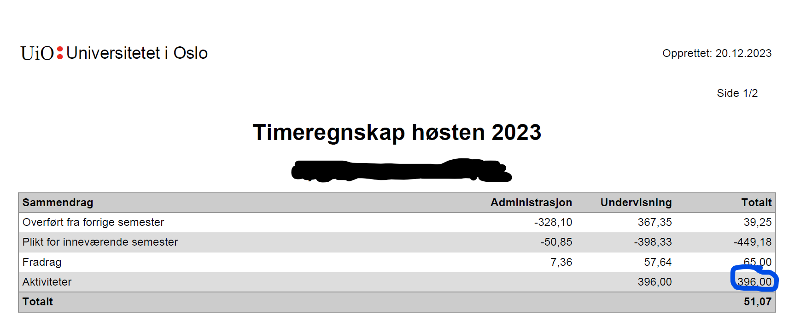

3 Detaljer om script
Scriptene inkluderer følgende linje:
´ invisible(Sys.setlocale(locale=‘no_NB.utf8’)) ´
Dette er for å sikre at norske tegn blir riktig håndtert i R.
Flere av scriptene er at de foretar en sjekk av stavemåten av navn. Det er noen ganger det er notert uten mellomnavn etc. For å sikre at det er konsistens i navnene sjekkes vanlige alternative stavemåter. Disse stavemåtene er i en egen excel-fil som leses inn i scriptene.
3.1 Saldo fra timeregnskapet
Script: leseTimeregnskap.R
Rapportene på personnivå inkluderer en kolonne med saldo fra timeregnskapet forrige semester. For fast ansatte er dette saldoen kumulert slik det er oppgitt i Aura. For midlertidige ansatte er det derimot langt mer nyttig med hvor mange timer de har igjen av pliktarbeidet slik at summene i planen skal summeres til 0 mot slutten av kontraktsperioden.
3.1.1 Oversiktsfil
Ved ISS lages det en oversikt over timeregnskap per person som ligger på området: N://iss-admfelles/Timeregnskap/ For fast ansatte er det kumulativt overskudd/underskudd, mens det for midlertidige ansatte er det gjenstående timer. Filstrukturen er slik at det legges til en ny kolonne nr 2 hvert semester og det er navn i første kolonne. Det er altså slik at det hvert semester trengs det å plukkes opp kun de to første kolonnene.

Merk at det for de faste ansatte er det per i dag kun brukt etternavn. Scriptet gjør en korrigering ved å matche navn i staben mot fil på etternavn for å gi alle fullt navn.
For midlertidige ansatte er det tilsvarende, men det er gjenstående timer som rapporteres. For disse er det oppgitt fult navn, men det gjøres en sjekk mot alternative stavemåter for å få navnene riktig.
3.1.2 Scrape pdf’er
Oversiktsfilen lages manuelt etter at timeregnskapet er avsluttet. Det er typisk behov for å kjøre rapporter før dette. Derfor er det laget et script som leser inn saldo fra enkeltutskrifter fra timeregnskapet.
Ved ISS lagres utskrifter fra AURA i en egen mappe på fellesdisk: N://iss-admfelles/Timeregnskap/ og det er en mappe for hvert år og semester. I hver slik undermappe er det egen mappe for faste ansatte og midlertidige ansatte.
Enkeltutskrifter fra timeregnskapet er pdf-filer med navnekonvensjon [etternavn][fornavn][mellomnavn][SEMESTER] [ÅRSTALL][_OPPDATERT][.pdf].
Scriptet sjekker først om excel-filen for saldo finnes i mappen. Hvis den ikke gjør det, leser den inn data fra de enkelte pdf-filene. For faste ansatte plukkes opp saldoen fra linjen “totalt” som markert i bildet.

For midletidige ansatte fanges derimot opp summen av aktiviteter gjeldende semester som markert i nest bilde. Denne summen trekkes fra saldoen fra forrige semester slik at det er gjenstående sum som rapporteres til slutt.

3.2 Frikjøp
Script: frikjop.R
Rutinen ved ISS er at en oversikt over registrert frikjøp per år fordelt på internt og eksternt frikjøp. Det legges til nye kolonner til høyre. Scriptet henter disse dataene fra kolonnen markert “eksternt” fra hvert årstall, regner ut prosentandelen og fører dette som antall undervisningstimer på hvert semester.
3.3 Planlagt forskningstermin
Script: forskningstermin_planlagt.R
Administrasjonen fører oversikt over opparbeidet rett til forskningstermin og avtalt forskningsterminer i en oversikt i egen Teams-gruppe. Dette er altså kun avtalt forskningstermin som betinges av at det er søkt om dette. Andre private planer fanges ikke opp.
3.4 Diverse andre data
Script:
- uniped.R
- verv.R
- ekstra.R
- utenlandsopphold.R
- norskkurs.R
Disse scriptene er ganske like og henter informasjon fra enkel Excel-filer med tilsvarende struktur: kolonner med navn og antall timer avtalt.
3.5 Sikkerhetskopi
Generelt gjøres det sikkerhetskopi til github.uio.no.